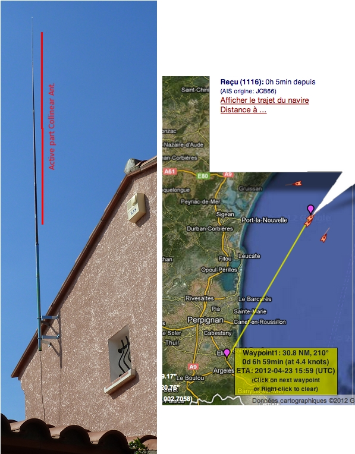
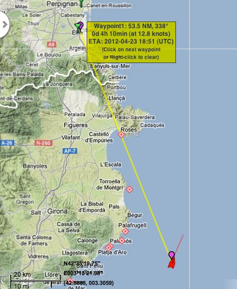

Jean Pierre's 9 Element Collinear, Perpignan, France
I live in the sea of 3.5 nm (NLSC (MarineTraffic Receiving Station Id:
1116)).
I want to improve my reception.
I realized your antenna (High Gain Collinear AIS (162MHz) Receiving
Aerial MK-1). Contained in a fishing rod fiberglass.
The descent of coax (RG58) is about 6 meters.

